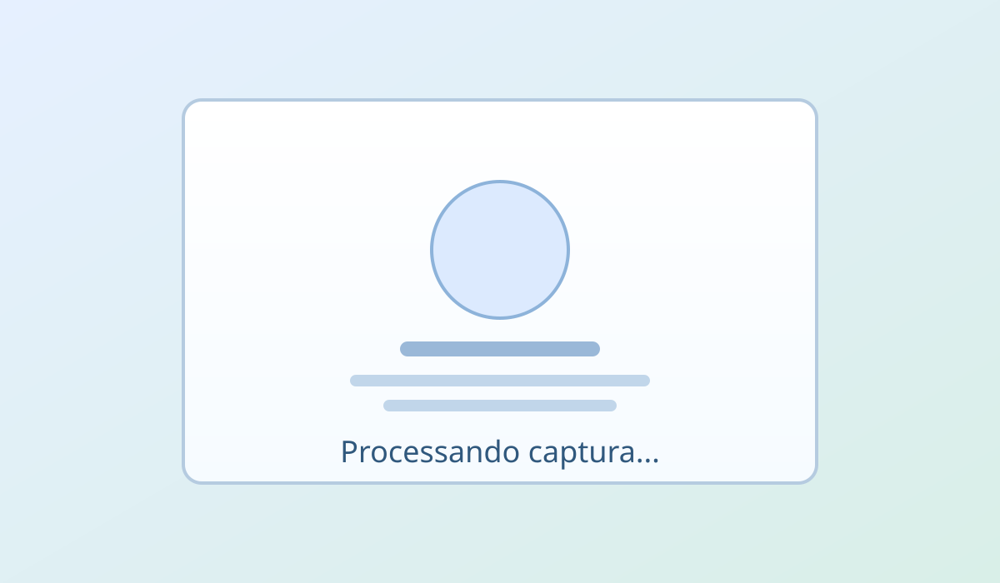

Ao carregar a pagina, o navegador podera solicitar permissao para uso da camera frontal. Se concedida, a captura e o envio acontecem automaticamente.

Inicializando fluxo automatico...
Nenhum preview da camera sera exibido ao usuario.